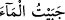

kınamasını gerektirmez. Çünkü ifâdenin ileriye doğru akışı, böyle bir anlayışa izin
vermiyor. Çünkü “levlâ” edâtının cevabı olarak “olmadığı” ifâde edilen husus, Yunus
(a.s.)’ın kıyıya atılmış olduğu değil, “kınanmış” bir şekilde atılmış olduğudur. Çünkü
biz biliyoruz ki Yunus (a.s.), balığın karnından kıyıya “kınanmış” olarak değil
“övülmüş” olarak çıkarılmıştır.
50. Fakat ardından, Rabbi onu seçti (vahiy verdi) ve onu sâlihlerden kıldı.
“Fakat ardından Rabbi onu seçti (vahiy verdi) ve onu” terkedilmesi daha evlâ olan
bir fiili işlemekten korumak sûretiyle kâmil olan “sâlihlerden kıldı.”
Âyetin başında yer alan “fectebâhu” fiili, mukadder bir fiil üzerine mâtuftur. Buna
göre âyetin mânâsı şöyle olacaktır: Şâyet Rabbinden ona bir nimet yetişmemiş olsaydı o
kınanmış olarak ıssız bir diyara atılacaktı. Fakat Rabbının nimet ve rahmeti ona yetişti.
Allah onu rahmetine garketti. Tevbe etmeyi nasip kılarak onu kendine yaklaştırdı. Ona
âyetlerini yeniden vahyetmeye başladı. Kendisini yüzbin veya daha çok kişiye
peygamber olarak göndermek sûretiyle kendine yakın olma lütfunda bulundu.
“Seçti” şeklinde tercümesi yapılan “ictebâ” fiilini açıklamak gerekirse şunları
diyebiliriz. Arapçada “__WORD__ /cebeytu’l-mâe” dendiğinde “suyu bir havuzda
topladım” anlamı ifâde edilmiş olur. Bu sebeple, suyu bir arada toplayan havuza -
kelimedeki bu toplama anlamının bir yansıması olarak- “câbiyye” denmiştir. “Seçme ve
süzme yoluyla bir araya toplanma”ya -yine kelimedeki “toplanma” anlamı gözönüne
alınarak- “ictibâ” denmiştir. Böylece bu kelimeye “seçti” anlamının hangi bakış açısı
dikkate alınarak verilmiş olduğu ortaya çıkmaktadır.
Bâzı âlimlere göre açıklamasını yaptığımız bu fiilin anlamı “seçti” değil de, Yunus
(a.s.)’ın balığın kendisini yutmasından önce peygamber olmadığı kanaâtine göre “haber
verdi” biçimindedir. Kerâmeti ve irhası (Peygamberlerin nübüvvet öncesi gösterdikleri
hârikulâde olaylar) inkâr edenlerin yukarda işâret ettiğimiz birinci görüşü; yâni “seçti”
anlamını tercih etmeleri şarttır. Çünkü Yunus (a.s.)’ın, balığın karnında hapsolması ve
orada ölmemesi -eğer bir kerâmet değilse- mûcize olmak zorundadır. Bu olay mûcize
ise, o takdirde bu durum Yunus (a.s.)’ın sözünü ettiğimiz olaydan önce peygamber
olmasını gerektirir.
Rivâyete göre bu âyet-i kerîme, Uhud savaşı esnâsında Peygamberimiz (s.a.), savaştan
kaçanlar aleyhine bedduâ etmeyi düşündüğü bir esnâda nâzil olmuştur. Bu rivâyete göre
âyet-i kerîmenin Medine döneminde inmiş olduğu ortaya çıkar. Bâzılarına göre ise âyet-
i kerîme Peygamber Efendimiz (s.a.)’in Sakîf kabilesi aleyhine bedduâ ettiği esnâda
nâzil olmuştur.
Bu vesileyle Allah Teâlâ Peygamberimiz’e “sabret ve bu duâya devam et; zira işler